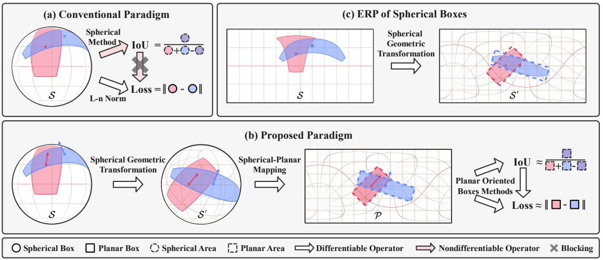

Xinyuan Liu (刘 鑫源)PhD Studnet
Institute of Computing Technology, Chinese Academy of Sciences (ICT,CAS) Email: liuxinyuan21s@ict.ac.cn Google Scholar / DBLP / Github |
 |
üá®üá≥ Biography
I'm now a Ph.D. student in Institute of Computing Technology, Chinese Academy of Science , Beijing, China, starting from Autumn 2021 . I received the B.E. degree from School of Computer Science and Technology, Xidian University, Xi'an, China, in 2021.
I'm interested in computer vision, with a focus on panoramic/oriented/3D object detection.
üî• News
- 05/2024: One cooperative paper is released on arXiv.
- 03/2024: I’m becoming a Ph.D. student at Institute of Computing Technology, Chinese Academy of Sciences.
- 02/2024: One paper is accepted by CVPR 2024.
- 05/2023: One paper is accepted by IJCAI 2023.
- 02/2023: One paper is accepted by CVPR 2023.
- 09/2021: I’m joining Institute of Computing Technology, Chinese Academy of Sciences as a M.S. student.
üìù Publications
| Rethinking Boundary Discontinuity Problem for Oriented Object Detection Hang Xu*, Xinyuan Liu*, Haonan Xu, Yike Ma, Zunjie Zhu, Chenggang Yan and Feng Dai† CVPR 2024 (CCF-A) PDF / Supp / Code / Slides / Poster / BibTex |
|
|  | Sph2Pob: Boosting Object Detection on Spherical Images with Planar Oriented Boxes Methods
Xinyuan Liu, Hang Xu, Bin Chen, Qiang Zhao, Yike Ma, Chenggang Yan and Feng Dai† IJCAI 2023 (CCF-A) PDF / Supp / Code / Slides / Poster / BibTex |
| Gaussian Label Distribution Learning for Spherical Image Object Detection Hang Xu, Xinyuan Liu, Qiang Zhao, Yike Ma, Chenggang Yan and Feng Dai† CVPR 2023 (CCF-A) PDF / Supp / Code / Slides / Poster / BibTex |
|
| TopoLogic: An Interpretable Pipeline for Lane Topology Reasoning on Driving Scenes Yanping Fu, Wenbin Liao, Xinyuan Liu, Hang Xu, Yike Ma, Feng Dai† and Yucheng Zhang arXiv 2024 (preprint) PDF / SUpp / Code / Slides / Poster / BibTex |
üéì Education
|
M.S.-Ph.D. candidate, Institute of Computing Technology, Chinese
Academy of Science (ICT,CAS) Beijing, China Sep. 2021 - Now |
|
|
B.E. degree, School of Computer Science and
Technology, Xidian University (XDU) Xi'an, China Sep. 2017 - Jun. 2021 |
|
|
Fugu Middle School of Shaanxi Fugu, China Sep. 2014 - Jun. 2017 |
üéñ Awards
- Master's National Scholarship, 2023
- ICT × E Fund Scholarship, 2022
- Outstanding Graduates of Universities in Shaanxi Province, 2021
- XDU × Oupalm Scholarship, 2019
- First-Class Academic Scholarship, 2018, 2019, 2020, 2022, 2023
© Xinyuan Liu | Last updated: Mar. 2024.